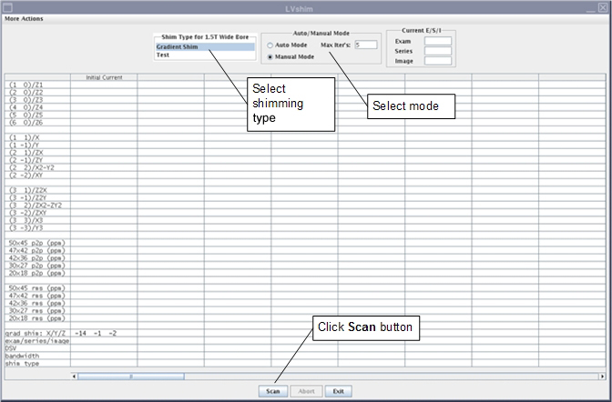
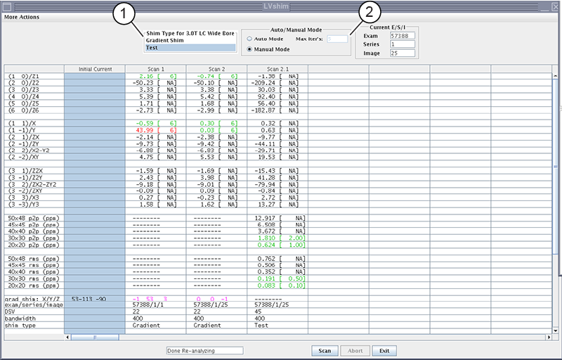
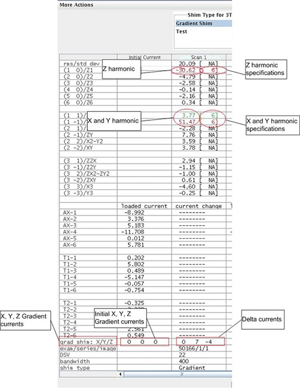
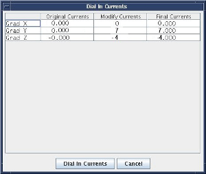
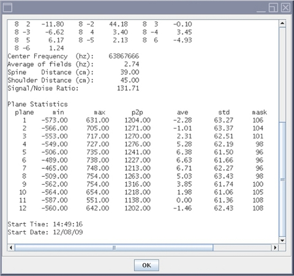

Start the LVShim tool and run Gradshim in Manual mode.
Procedure
Start the LVShim tool:
(For non-proprietary mode) From the Common Service Desktop, select Calibration > LVShim, and then select Click here to start this tool.
By default, Gradshim is performed in Auto mode, though Manual mode is also available.
Select the Shim Type (Gradient Shim or Test) and Manual Mode, and then click Scan.
Figure 1. LVShim - Manual mode


1
Shimming type
2
Manual mode
Note The gradient shim bit resolution was increased by 16 times. This will result in gradient current values that are much higher than those observed in previous versions of this tool.
Result
After the scan is complete, the tool calculates harmonics and compares X, Y, and Z to specifications.
Green cell = Passed specification
Red cell = Failed specification
Figure 2. Gradient harmonics and gradient bits

The tool calculates the X, Y, and Z gradient delta currents (for gradient bits only) and the new currents based on the harmonics in another window.
Figure 3. Original delta and new currents (examples)

To accept or decline the new currents:
If X/Y/Z harmonics data cells are green, decline the new currents by clicking the Cancel button. Ignore cells with the specification NA.
If any harmonics data cells are red, accept the new currents by clicking the Dial In Currents button. The new currents will load in a new column in the LVShim user interface as shown in Gradient harmonics and gradient bits.
If after five manual iterations any cell is still red, click More Actions and select Expert Mode.
For more details about the scan (cal file name, center frequency, and so on), select More Actions > More Info.
Figure 4. More information on scan

When all iterations are complete and all harmonics are within specification, click Exit in the LVShim window.